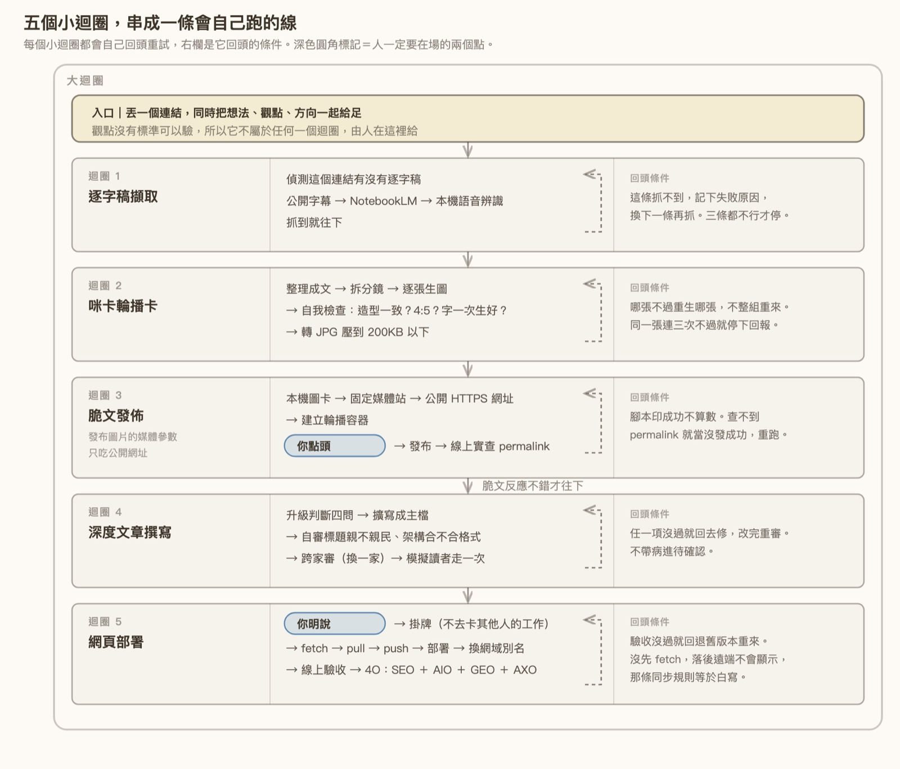
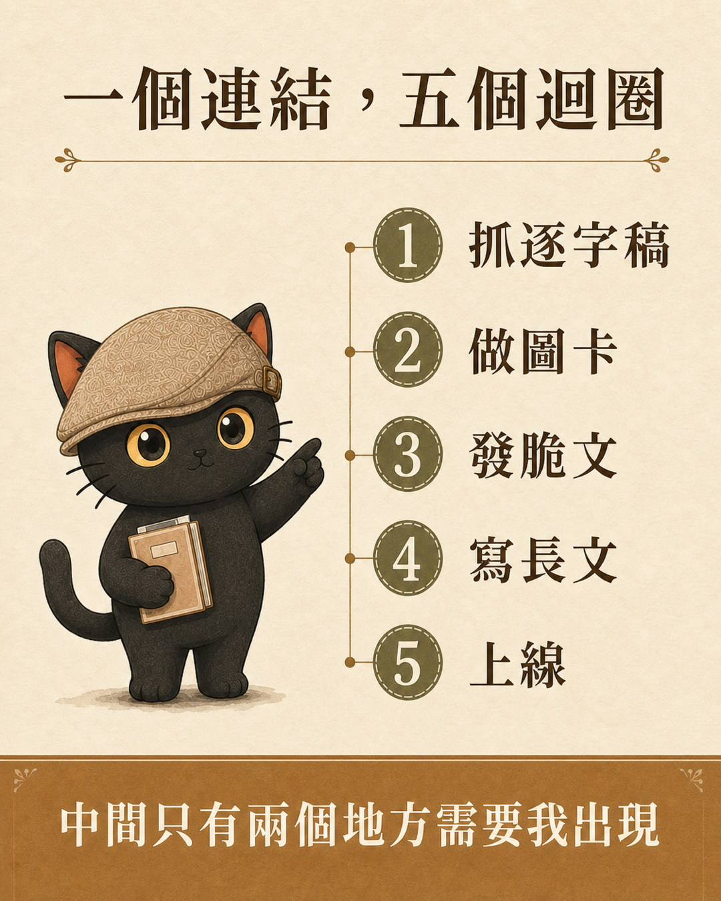
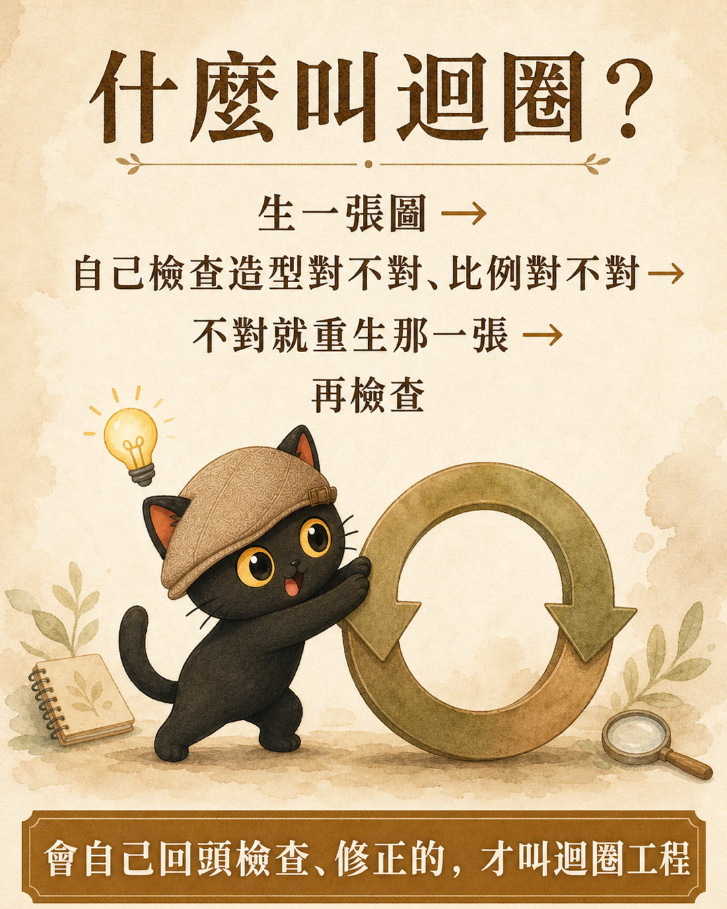
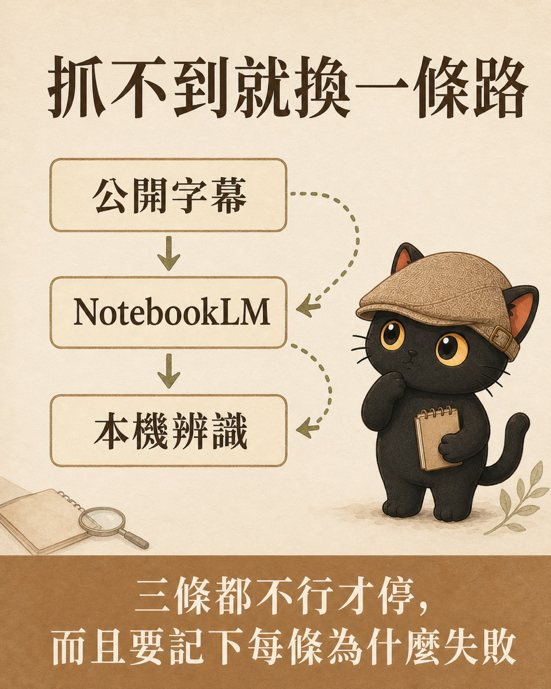
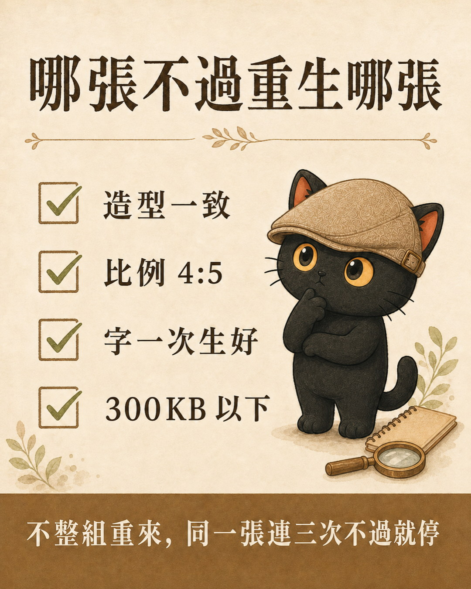
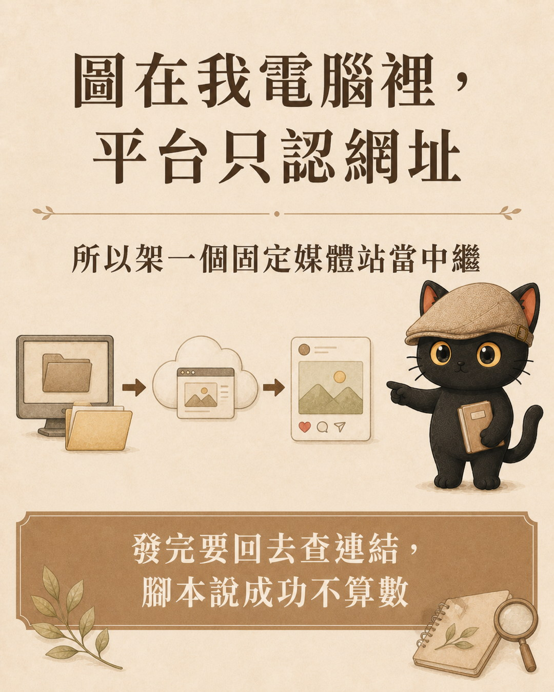
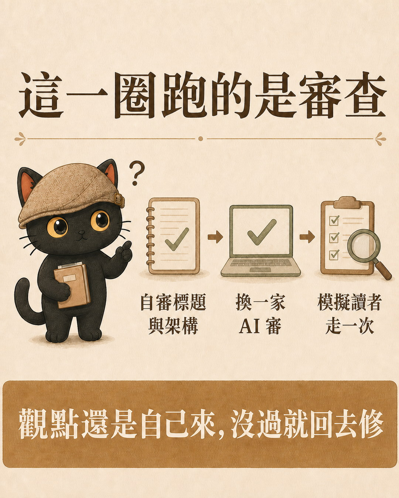
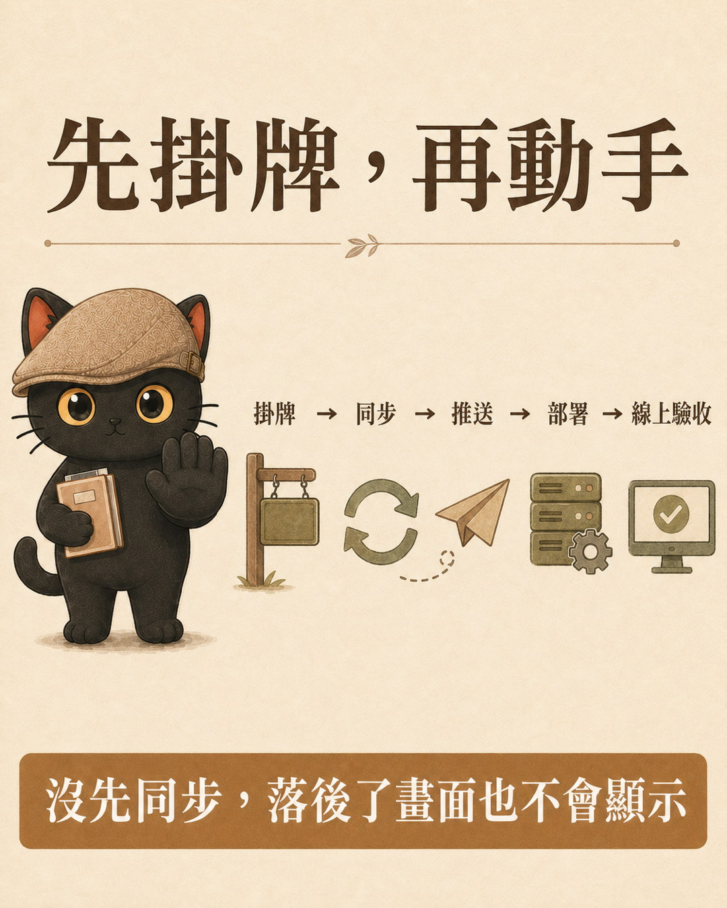
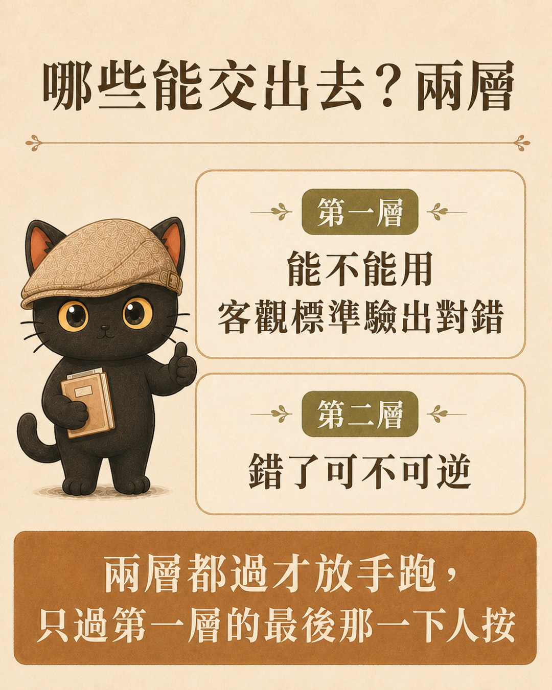

這篇把我實際在跑的內容產線整條攤開：一個連結進來，怎麼變成一篇脆文（Threads 上的短貼文）、變成圖卡、變成官網文章，最後上線。重點不在流程本身，在那條分界線：哪些步驟可以交給 AI 自己跑完、哪些永遠得我自己來。判準只有一句話，能自己驗出對錯的才交得出去。五個迴圈我會一個一個拆開，每一個都附上它的回頭條件，以及我實際踩過的坑。
- 你有一套自己重複在做的流程，每次都要從頭盯到尾，盯到很累
- 你試過把工作交給 AI，但它做完你還是要整個重看一遍，等於沒省到
- 你想知道哪些事該交出去、哪些事無論如何都要自己來，需要一條判準
- 一條判準：能自己驗出對錯的才能做成迴圈，沒有標準就不要交出去
- 五個迴圈的完整拆解，每一個都附回頭條件與我實際踩過的坑
- 四個步驟，讓你今天就能拿自己的流程對一次，分出哪些能交、哪些不能


核心判準：能自己驗出對錯的才算迴圈
先講結論，因為這條判準比五個迴圈本身更有用。
| 這件事 | 能不能交出去 | 為什麼 |
|---|---|---|
| 抓逐字稿 | 可以 | 抓到就是抓到，沒抓到就換一條路，機器自己知道 |
| 生圖卡 | 可以 | 角色造型對不對、是不是 4:5、字有沒有生好、超不超過 300KB，四項都驗得出來 |
| 脆文的觀點 | 不行 | 我自己想的，每篇感想都不一樣，沒有標準可以驗 |
為什麼標準這麼重要？因為迴圈的定義就是會自己回頭檢查、修正。AI 做完自己檢查、發現問題自己修、修完再檢查，這整套的前提是它要能判斷對錯。沒有標準可以判斷，它就不會回頭，也就不是迴圈，只是一次性的執行。
所以我的觀點不是「還沒自動化的一步」。它是這條產線上本來就該由我給的料，待在入口，不屬於任何一個迴圈。

- 可以放著讓 AI 自己跑完嗎？迴圈工程與圖譜工程不用會寫程式也學得會
那篇講迴圈工程的概念本身，用寫一篇文章當例子。這篇是我把那個概念實際蓋成一條產線之後的樣子。
迴圈一：逐字稿擷取
做什麼：丟一個連結進來，先偵測它有沒有逐字稿可以抓。
為什麼是迴圈：抓逐字稿不是一條路走到底，是有順序的三條路。平台的公開字幕、丟進 NotebookLM、本機語音辨識。第一條抓不到，記下失敗原因，換第二條。第二條不行，換第三條。三條都不行才停下來告訴我。
這裡的關鍵是那句「記下失敗原因」。如果只是靜靜地換路，我永遠不知道為什麼這支影片抓不到。是沒開字幕、需要登入、還是格式不支援，這些資訊決定我下次要不要換個來源。

中間：我看稿，給想法
這一步不是迴圈。
逐字稿整理好之後，我會看過一次，然後給我的想法。這支影片為什麼值得寫、我不同意它哪一點、它讓我想到自己的什麼經驗。這是整條線上唯一沒辦法交出去的部分，因為每一篇的感想都不一樣，沒有一個標準可以說「這個觀點對不對」。
不過這裡有個實務上的做法：如果我在丟連結的時候就把想法、方向一起講清楚，中間這一停就可以省掉。給料一次給足，後面的迴圈就能一路跑完，不用停下來等我看稿。
迴圈二：咪卡輪播卡
做什麼：把想法整理成文，拆成分鏡腳本，一張一張生成圖卡。咪卡是我的品牌角色，所有圖卡都用同一個角色，讀者滑到就知道是我發的。
為什麼是迴圈：生圖之後有一組自我檢查，四項：角色造型跟定妝照一不一致、是不是 4:5（IG 跟 Threads 共用的比例）、圖上的中文字有沒有在生圖當下一次生好、轉成 JPG 之後有沒有壓到 300KB 以下。
哪一張不過，就重生哪一張，不整組重來。同一張連續三次不過就停下來回報，不無限重試。
這四項為什麼可以交出去？因為它們全部都驗得出來。比例是數字、檔案大小是數字、造型一致有定妝照可以對、字有沒有生好用看的就知道。這是最典型的「機械性、標準明確」。

迴圈三：脆文發佈
這一段是我自己想出來的解法，講細一點。
問題是這樣的：Threads 的官方 API 支援發圖片和輪播，但發布圖片與影片的那個媒體參數是 image_url，Meta 官方文件要求它必須放在公開伺服器上，由平台自己透過網址去抓。它讀不到我電腦裡的檔案。（這條限制講的是發布媒體那一段，不是整個介面都這樣。）
所以我做完圖卡之後卡住了。圖在我的硬碟裡，Threads 要一個網址。
站是固定的，不是每次發文都重新建一個。上傳跟發布用同一支腳本跑完，一行指令：
node scripts/post.js --text "貼文內容" \
--local-image "/絕對路徑/card01.jpg" \
--local-image "/絕對路徑/card02.jpg"為什麼是迴圈：因為發布成功與否要用查的，不能用信的。腳本印出「發布成功」不算數，真正的驗收是回頭去 Threads 查到 media id 跟 permalink，查得到才算成功，查不到就當沒發成功、重跑。

迴圈四：深度文章撰寫
做什麼：脆文反應不錯的，擴寫成官網深度文。
先講清楚這一圈跑的是什麼：格式、查證與審查。觀點怎麼取捨、哪一段要留哪一段要砍，仍然是我自己來，跟前面那條判準一致。會自己轉圈的是「審完沒過就回去修」那一段，不是整篇文章的生成。
先過升級判斷。不是每篇脆文都值得升級，缺任何一項就留在脆文：
- 這篇背後有沒有一個反覆出現的問題
- 讀者看完可以做哪個動作
- 有沒有可驗證的材料（真實流程、案例、工具、提示詞、技能包）
- 有沒有講清楚邊界（這套方法適用到哪裡，哪裡還要人工確認）
只有感想、沒有可行動交付的，就不要硬升。
為什麼是迴圈：成稿之後有三道審查，任何一道沒過就回去修，改完重審。自審看標題親不親民、架構符不符合格式；跨家審是換一家 AI 來審，這裡有個硬規則，審稿的模型必須跟寫稿的模型不同家，同一家審自己等於沒審；最後用模擬讀者的方式從頭看一次，檢查標題吸不吸引人、內容順不順、有沒有給出讀者立即可用的東西。三道都過了才進待確認，不帶病往下走。
標題那一關我用一條公式：主標題是讀者會問的那句話，副標題才放我的概念或金句，中間用全形直線接起來。

迴圈五：網頁部署
做什麼：把文章排成網頁，上線，做搜尋與 AI 引用的優化。
為什麼是迴圈：部署有一整串前後順序，任何一步驗收沒過就回退重來。順序是鎖死的：掛牌、fetch、pull、push、部署、換網域別名、線上驗收。
為什麼要掛牌：因為同一個網站可能有好幾個工作同時在改。我要動之前先在看板上登記一行，看到別人掛牌沒撤就不動，只排隊。
git status 根本不會顯示你落後遠端，那條「部署前必先同步」的規則就等於白寫。我因為漏掉這步，把另一台電腦剛推上去的一整頁內容蓋掉過。最後是搜尋與 AI 引用的整理，我把它叫 4O：

| 縮寫 | 全名 | 做給誰看 |
|---|---|---|
| SEO | 搜尋引擎最佳化 | |
| AIO | AI 最佳化 | 生成式搜尋的摘要 |
| GEO | 生成引擎最佳化 | AI 引用你的內容時找得到 |
| AXO | Agent 體驗最佳化 | AI 代理讀你的網站時讀得懂 |
最後這個 AXO 是這兩年才變重要的。以前網站只要給人看，現在還要給 AI 讀。
- AI 時代的網站，是做給 Agent 看的
那篇把 AXO 這一格展開講：AI 代理讀網站時會卡在哪，以及要補哪些檔案它才讀得懂。
人要在場的兩個點
整條線上我只在兩個地方一定要出現：發到 Threads 之前我要點頭，推上官網之前我要明說。
這兩個不是自動化沒做完，是我刻意留的紅線：凡是對外送出、不可逆、牽涉金錢的動作，AI 不自動執行。就算我開了全自動模式，這兩個點還是會停下來等我。
這樣算不算圖譜工程？
我自己問過這個問題，答案是還不算，差一格。
圖譜工程有三個組成：狀態（每件事現在在哪一格）、節點（做事的那一步）、邊（什麼條件才能往下走）。判準是有沒有共同狀態與邊，不是「比較複雜」或「比較自動化」。
| 組成 | 有沒有 | 實況 |
|---|---|---|
| 節點 | 有 | 五個迴圈就是五個節點 |
| 邊 | 有 | 「四項全過才發」「反應不錯才升級」「明說才部署」都是條件 |
| 狀態 | 沒有 | 脆文在發文看板、圖卡在資料夾、官網在官網看板、部署在 git，四本帳各記各的 |
而且還有一個更根本的：一條線再長、再會自己轉圈，那還是迴圈工程。圖譜的價值在好幾條線。
什麼時候會真的變成圖譜？當我一次丟三個連結進來，三條線同時在跑的時候。這時候「誰等誰」才真的出現：三篇都想上官網，但同一個網站一次只能一個工作在改，於是要排隊。A 篇還在等脆文反應決定要不要升級，B 篇已經在排版，C 篇卡在生圖重試。這時候如果你問我「現在三篇各在哪一格」，沒有共同狀態我答不出來。
- 把好幾條會自己跑的線接起來
那篇專講圖譜工程的三個組成。如果你也在判斷自己的流程算迴圈還是圖譜，先看那篇的定義再回來對。
你可以怎麼開始
不用一次做完五個。挑你重複最多次的那一段先做。
把你的流程寫下來，一步一行。不用漂亮，能看懂就好。
每一行問一句：這步做完，能不能用客觀標準判斷它對不對。能，這步就可以做成迴圈；不能，這步留給你自己，而且要把它挪到最前面當「給料」。
把「能」的那幾步各自寫出回頭條件。什麼情況要重來、重來幾次就停、停了要回報什麼。沒有回頭條件的不叫迴圈，叫執行。
你會發現，光是第二步就能幫你把事情分成兩堆：一堆是你一直在重複、其實早就可以交出去的；另一堆是只有你能做、卻一直被雜事擠掉的。
那條分界線，就是能不能自己驗出對錯。

想把自己的流程拆成迴圈？
我做的事，是把你早就會、卻說不清楚的判斷，一條一條提煉成可以重複用的清單。從一篇文章，到一整條產線。
加入我的 LINE 社群，每個月有免費線上講座，帶你把手上的工作流實際拆成會自己跑的迴圈。
加入 LINE 社群 ↗